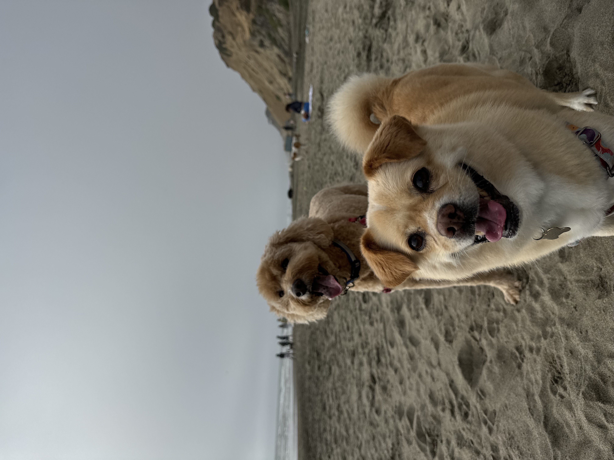

Hi! My name is Veronica Yang, and I am originally from San Francisco. I attend Northeastern University in Boston studying Data Science and Finance.
Outside of school, I have always been a huge animal lover. I grew up with two dogs and fostered dogs in high school. Toby is a Labradoodle and Dudley is a Shiba-Inu Mix and they are my absolute favorite things in this world. When I was younger, I would stay up all night reading about different dog breeds and always thought I would be a veterinarian. My new dream is to open up a swimming school for dogs. I grew up only fifteen minutes away from the beach, so I would always take my dog, Toby. I remember when he was a puppy, he was so eager to swim in the ocean, but was super scared to dive in, but we took him to swimming lessons and now swimming is his favorite activity. I love being in the ocean and swimming with Toby, so I would love to teach other dogs how to swim so they can do the same with their owners. Hopefully one day this can be a reality and I can’t wait!
